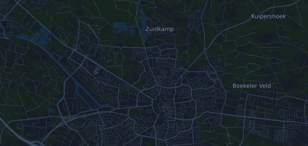

Elektramat Marathon (Enschede Marathon) 42,2 km
- Distancia
- 42,2 km
- Desnivel positivo
- ↑ 173 m
- Punto más alto
- 75 m s. n. m.
- Superficie
- Asfalto
- Perfil
- Llano
- Salida
- 10:00 h
- Avituallamientos
- 16
Perfil de altitud
Prepárate con Mila
Mila es un coach de running en una app. Si añades una carrera a tu plan, el coach planifica tus semanas hasta la salida según tu forma y te da un pronóstico de tiempo y un plan de ritmo, hidratación y energía para el recorrido.

La sesión justa. El día justo.
El recorrido

Sobre el recorrido
Elektramat Marathon (Enschede Marathon) es una carrera en ruta de 42,2 km (Enschede, Países Bajos). El recorrido acumula 173 m de desnivel positivo y 172 m de desnivel negativo, 4,1 m por km, así que es llano. El punto más alto está a 75 m sobre el nivel del mar y el más bajo a 21 m.
La subida más grande empieza en el km 2,8: 27 m de desnivel en 8,2 km, con un 0,3 % de media, hasta los 75 m. En total, el recorrido tiene 2 subidas de al menos 25 m; la última empieza en el km 31,9.
El organizador prevé 16 avituallamientos, el primero en el km 2,5 y el último en el km 40,0.
En la app Mila, el coach describe el recorrido en detalle en tu idioma y planifica tu ritmo y tu avituallamiento.
Subidas
| Empieza en | Longitud | Desnivel | Pendiente | Cima (m s. n. m.) |
|---|---|---|---|---|
| km 2,8 | 8,2 km | 27 m | 0,3 % | 75 |
| km 31,9 | 9,9 km | 26 m | 0,3 % | 56 |
Antes de la salida
Avituallamientos
| En | Qué hay |
|---|---|
| km 2,5 | agua |
| km 5,0 | agua, bebida isotónica, comida |
| km 7,5 | agua |
| km 10,0 | agua, bebida isotónica, comida |
| km 12,5 | agua |
| km 15,0 | agua, bebida isotónica, comida |
| km 17,5 | agua |
| km 20,0 | agua, bebida isotónica, comida |
| km 22,5 | agua |
| km 25,0 | agua, bebida isotónica, comida |
| km 27,5 | agua |
| km 30,0 | agua, bebida isotónica, comida |
| km 32,5 | agua |
| km 35,0 | agua, bebida isotónica, comida |
| km 37,5 | agua |
| km 40,0 | agua, bebida isotónica, comida |
Horas de salida
- 10:00 h
Fuente: enschedemarathon.nl, consultado el 24 de noviembre de 2026
Tabla de ritmos
Elektramat Marathon (Enschede Marathon) 42,2 km en 3:00:00 – ritmo por km y tiempos de paso
4:16 min/km · km 10: 42:39 · km 21,1: 1:30:00 · km 30: 2:07:58 · km 40: 2:50:37 · meta: 3:00:00
Elektramat Marathon (Enschede Marathon) 42,2 km en 3:30:00 – ritmo por km y tiempos de paso
4:59 min/km · km 10: 49:46 · km 21,1: 1:45:00 · km 30: 2:29:17 · km 40: 3:19:03 · meta: 3:30:00
Elektramat Marathon (Enschede Marathon) 42,2 km en 4:00:00 – ritmo por km y tiempos de paso
5:41 min/km · km 10: 56:52 · km 21,1: 2:00:00 · km 30: 2:50:37 · km 40: 3:47:29 · meta: 4:00:00
Elektramat Marathon (Enschede Marathon) 42,2 km en 4:30:00 – ritmo por km y tiempos de paso
6:24 min/km · km 10: 1:03:59 · km 21,1: 2:15:00 · km 30: 3:11:57 · km 40: 4:15:55 · meta: 4:30:00
Los tiempos suponen un ritmo constante de principio a fin. Es pura aritmética, no un pronóstico: en las subidas, entre la gente y en los avituallamientos el ritmo varía.
Preguntas frecuentes
¿Cuándo es Elektramat Marathon (Enschede Marathon) 42,2 km?
Elektramat Marathon (Enschede Marathon) 42,2 km se celebra el domingo, 11 de abril de 2027. Comprueba la fecha y la hora de salida con el organizador.
¿A qué hora sale Elektramat Marathon (Enschede Marathon) 42,2 km?
Según el organizador: 10:00 h.
¿Cuánto mide Elektramat Marathon (Enschede Marathon) 42,2 km y cuánto desnivel tiene?
La carrera tiene 42,2 km, con 173 m de desnivel positivo y 172 m de desnivel negativo. El punto más alto está a 75 m sobre el nivel del mar.
¿Cómo es el recorrido de Elektramat Marathon (Enschede Marathon) 42,2 km?
El recorrido es llano, con 4,1 m de desnivel por km de media. Tiene 2 subidas de al menos 25 m; la mayor empieza en el km 2,8: 27 m en 8,2 km. La salida y la meta están en el mismo lugar. Se corre sobre asfalto.
¿Hay avituallamientos en Elektramat Marathon (Enschede Marathon) 42,2 km?
Sí. El organizador prevé 16 avituallamientos: km 2,5 (agua); km 5,0 (agua, bebida isotónica, comida); km 7,5 (agua); km 10,0 (agua, bebida isotónica, comida); km 12,5 (agua); km 15,0 (agua, bebida isotónica, comida); km 17,5 (agua); km 20,0 (agua, bebida isotónica, comida); km 22,5 (agua); km 25,0 (agua, bebida isotónica, comida); km 27,5 (agua); km 30,0 (agua, bebida isotónica, comida); km 32,5 (agua); km 35,0 (agua, bebida isotónica, comida); km 37,5 (agua); km 40,0 (agua, bebida isotónica, comida).
¿Cómo reparto el ritmo en Elektramat Marathon (Enschede Marathon) 42,2 km?
Busca un esfuerzo constante de principio a fin y contente en los primeros kilómetros, cuando las piernas van frescas y el pelotón sale rápido. El recorrido es llano, así que un ritmo constante por kilómetro funciona bien. En Mila tienes un plan de ritmo para este recorrido, según tu propia forma.
Más carreras como esta
Más carreras cerca
- Arrow Venloop – Halve Marathon 21 km21 de marzo de 2027 · Venlo, Países Bajos
- NN CPC Loop Den Haag – NN Halve Marathon (21,1 km)14 de marzo de 2027 · Den Haag, Países Bajos
- Egmond Halve Marathon 21 km10 de enero de 2027 · Egmond aan Zee, Países Bajos
- Zevenheuvelenloop (15 km)Fecha sin fijar · Nijmegen, Países Bajos
- Amsterdam Marathon 42,2 kmFecha sin fijar · Amsterdam, Países Bajos
- ASML Marathon Eindhoven 42,5 kmFecha sin fijar · Eindhoven, Países Bajos
Prepárate con Mila
La sesión justa. El día justo.
Los datos proceden del archivo del recorrido y de la información del organizador. Comprueba la fecha, las horas de salida y el reglamento con el organizador.
Mila no está vinculada al organizador ni a los patrocinadores de la carrera, ni está patrocinada o avalada por ellos. Los nombres y las marcas pertenecen a sus propietarios. ¿Organizador o titular de derechos? Solicitar un cambio o la retirada